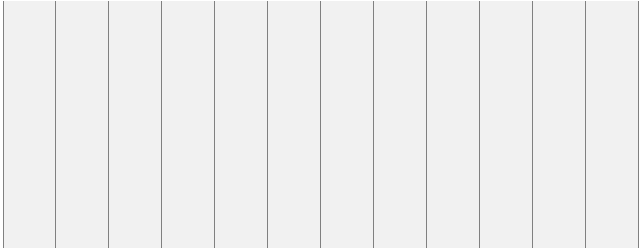
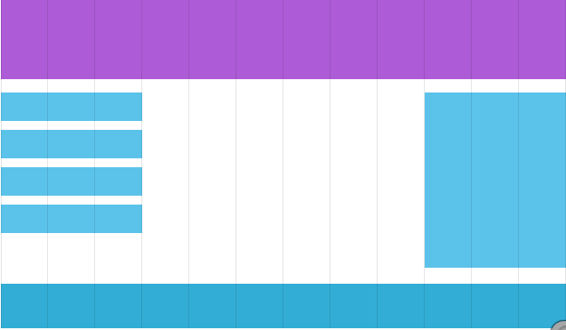

Banyak halaman web yang didasari pada grid-view, yang mana artinya bahwa hal,an dibagi kedalam colom - colom:

Penggunaan grid-view sangat bermanfaat ketika perancangan web page. Ini membuatnya lebih mudah untuk tempat elemet pada halaman.
Responsive grid-view seringkali memiliki 12 colom, dan memiliki lebar total 100% dan akan menyusutkan dan memperluas seperti kamu mengukur ulang browser window.

Responsive Grid View
Mulailah pembangunan responsive grud-view.
Pertama pastikan bahwa semua element HTML memiliki properti box-sizing dan atur nilainya menjadi border-box. Ini memastikan bahwa padding
dan border dimasukan dalam lebar dan tinggi total (total width and height) dari element.
Tambahkan kode berikut ini dalam CSS kamu:
* {
box-sizing: border-box;
}
Bacalah lebih tentang properti box-sizing di chapter CSS3 Box Sizing.
Contoh berikut menampilkan sebuah responsive web page sederhana, dengan dua kolom:
Input
.menu {
width: 25%;
float: left;
}
.main {
width: 75%;
float: left;
}
Contoh diatas itu baik jika web page hanya benrisikan dua kolom.
Akan tetapi, kita ingin menggunakan responsive grid-view dengan 12 kolom, yang memiliki kendali lebih terhadap web page.
Pertama kita harus mengkalkulasikan (menghitung) persentase untuk satu kolom: 100% / 12 kolom = 8.33%.
Lalu kita buat sebuah class untuk setiap kolom dari 12 kolom tersebut, class="col-" dan sebuah nomor mendefinisikan berapa banyak (persen) kolom per sesi yang harus di-span:
<divclass="col-9">
<h1>The City</h1>
<p>Chania is the capital of the Chania region on the island of Crete. The city can be divided in two parts, the old town and the modern city.<p>
<p>Resize the browser window to see how the content respond to the resizing.</p>
</div>
</div>
</body>
</html>
Untuk contoh yang kebih jelasnya silahkan salin kode diatas lalu pindahkan pada halaman html kalian, terimakasih
Semua kolom ini harus di-floating (diapung) menjadi left, dan memiliki padding dengan nilai 15px:
Kolom didalam sebuah row (baris) semuanya di-floating menjadi left, dan oleh karena itu mengambil keluar aliran page, dan element lainnya akan
ditempatkan sebagai jika kolom tidak ada. Untuk mengatasi ini, kita akan menambahkan style yang membereskan (clears) aliran (the flow):
CSS:
.row:after {
content: "";
clear: both;
display: block;
}
Kita juga ingin menambahkan beberapa style dan color untuk membuatnya terlihat lebih bagus:
Contoh
Gabungkan kode CSS ini dengan kode lengkap diatas.
Perhatikanlah bahwa webpage dalam contoh tidak terliat bagus ketika kamu mengukur kembali
browser window ke sebuah very small width (lebar yang sangat kecil). Pada chapter selanjutnya kamu akan
mempelajari bagaimana untuk membuatnya layak.